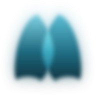

Corsinura PneumoLern-App für Android: echte Lungengeräusche mit Wellenform, Röntgen- und CT-Bilder mit CT-Serien, Lungenfunktion mit Fluss-Volumen-Labor, Blutgasanalyse, Rechner und Scores, Kurse, Quiz und Prüfungsmodus. Offline nutzbar, ohne Konto.
Learning app for Android: real lung sounds with waveform, X-ray and CT images with CT series, lung function with a flow-volume lab, blood gas analysis, calculators and scores, courses, quizzes and exam mode. Works offline, no account.
Application d’apprentissage pour Android : vrais bruits respiratoires avec forme d’onde, images de radio et de scanner avec séries de coupes, EFR avec labo débit-volume, gaz du sang, calculateurs et scores, cours, quiz et mode examen. Hors ligne, sans compte.
Aplicación de aprendizaje para Android: ruidos respiratorios reales con forma de onda, radiografías e imágenes de TC con series, función pulmonar con laboratorio de flujo-volumen, gasometría, calculadoras y escalas, cursos, quiz y modo examen. Sin conexión y sin cuenta.